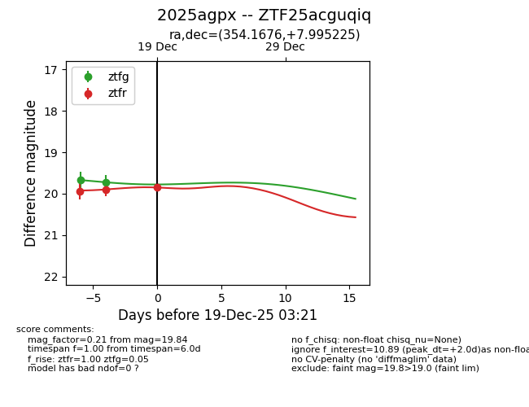
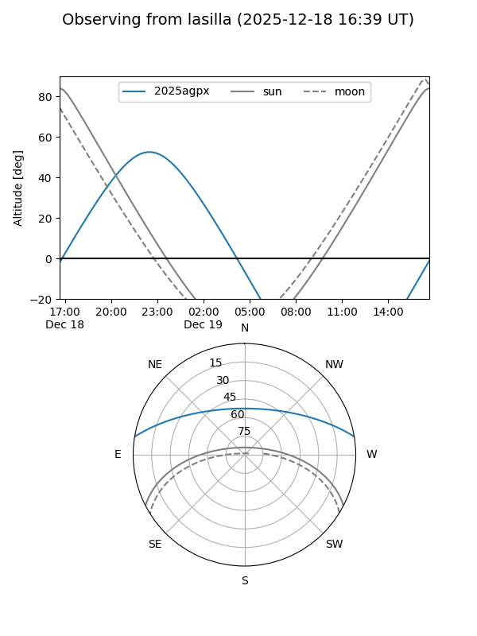
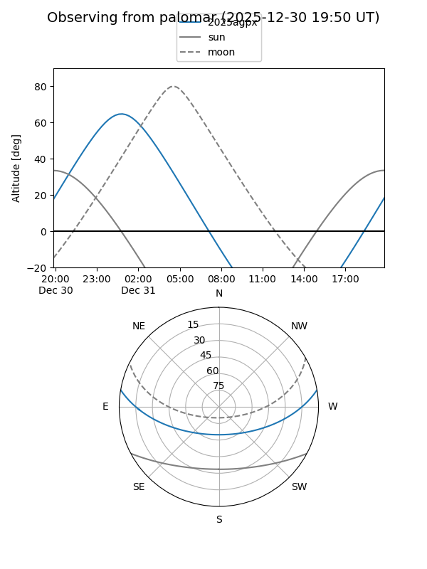
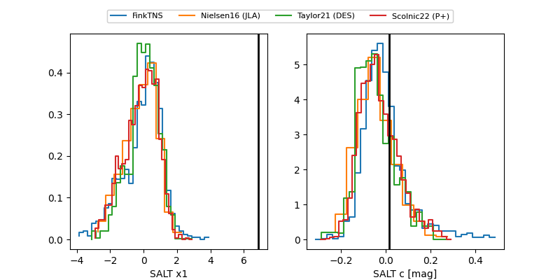

2025agpx
Target 2025agpx at 2025-12-31 18:00
Aliases and brokers:
FINK: link
Lasair: link
ALeRCE: link
TNS: link
YSE: link
alt names
ZTF25acguqiq (ztf,fink_ztf)
2025agpx (tns,yse)
Coordinates:
equatorial (ra, dec) = 354.1676,+7.99523
equatorial (HMS+DMS) = 23:36:40.23,+07:59:42.81
galactic (l, b) = (93.0145,-50.48235)
Flags:
Photometry:
last ztfg=19.80, ztfr=19.84
3 ztfg, 3 ztfr detections
Lightcurve

Visibility


Additional plots
